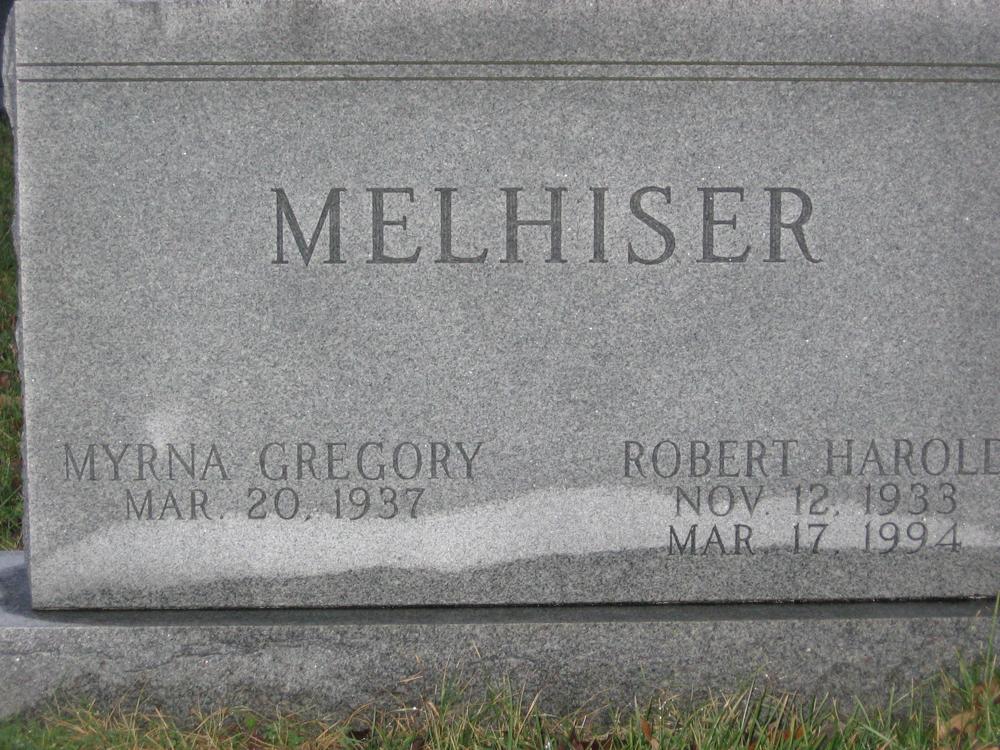
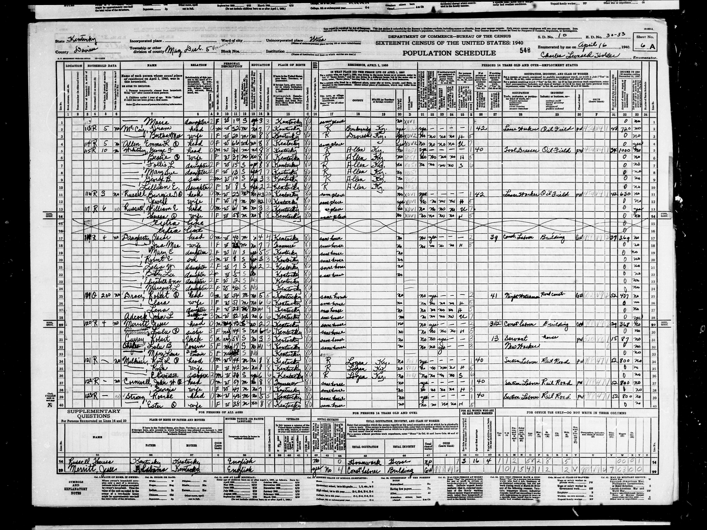
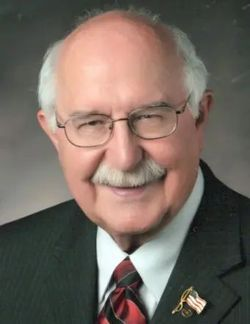
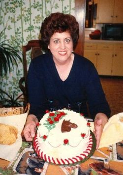

{kind=link}
{kind=link}
{kind=link}
{kind=link}


31. Robert Harold MELHISER [scrapbook] (Avery Lewis MELHISER , Wilhelm Heinrich , Johann Jacob , Andrew ) was born on 12 Nov 1933 in Daviess, Kentucky. He died on 17 Mar 1994. He was buried in ROSEHILL CEMETERY, OWENSBORO, KY.
|
 |
Robert married Myrna Ruth GREGORY on 17 Jul 1964 in OWENSBORO KY.
They had the following children.
+ 66 F i Amy Ruth MELHISER.
32. Mary Elizabeth MELHISER (Roy Louis MELHISER , Johann David , Johann Jacob , Andrew ) was born 1 on 26 Jan 1920 in MASONVILLE, DAVIESS CO, Kentucky. She died on 21 Jun 1998 in CENTRALIA, Illinois. She was buried in Mount Vernon Memorial Woodlawn, Illinois. |
Mary married 1 Henry Thomas COLEMAN on 24 Aug 1937 in Russelville, Logan, Kentucky. Henry was born in 1909. |
They had the following children.
67 F i Bettye R COLEMAN. 68 F ii
Helen M COLEMAN was born 1 on 5 Jan 1940 in LOGAN CO, Kentucky. She died on 7 May 2002 in Woodlawn, Illinois. She was buried in Sandy Brancg Cemetery, Illinois.
Helen married Robert G ARNOLD on 26 Feb 1959. Robert was born in 1939. He died in 2008.
33. Margaret Florine MELHISER (Roy Louis MELHISER , Johann David , Johann Jacob , Andrew ) was born on 15 Jul 1921. She died in Nov 1979 in ST LOUIS, Missouri. She was buried in Mount Vernon Memorial Gardens. |
Margaret married Wilmer Harold REEVES on 20 Feb 1939 in DUNMORE KY. Wilmer was born on 12 Dec 1918 in KENTUCKY. He died on 1 Mar 1992. |
They had the following children.
69 F i Shirley A REEVES. 70 M ii Jerry REEVES.
34. Elvis Lewis MELHISER [scrapbook] (Roy Louis MELHISER , Johann David , Johann Jacob , Andrew ) was born 1 on 8 Feb 1924 in DAVIESS CO KY, Kentucky. He died 2 on 18 Aug 1948 in Woodlawn, Illinois. He was buried in Dunmore KY, Ky.
|
 |
Elvis married 1 Mary Frances COVINGTON on 28 Dec 1943 in Rusellville, Logan CO, Kentucky. Mary was born on 11 Sep 1926 in Mayfield KY. She died on 6 Jun 1995. |
They had the following children.
71 M i
Elvis L MELHISER Jr was born on 14 Aug 1946. He died on 22 Aug 1946 in Greenville MUHLENBURG COUNTY KY. He was buried in Dunmoor Cemetery, Dunmoor KY.
35. Herman Joseph TRAUGHBER (Regina MUHLHAUSER , Herman Jakob , Johann Jacob , Andrew ) was born on 29 Jul 1911 in OWENSBORO, Daviess, Kentucky. He died on 29 Sep 1979.
|
Herman married Virginia Ethel KELLER on 25 Jul 1934 in NEW ALBANY. Virginia was born on 13 Apr 1909. |
They had the following children.
+ 72 M i Larry Joseph TRAUGHBER was born on 11 Oct 1937. He died on 16 Feb 1980.
36. Frances Eugene TRAUGHBER (Regina MUHLHAUSER , Herman Jakob , Johann Jacob , Andrew ) was born on 4 Jan 1913. He died in Mar 1982. |
Frances married Fannie Elizabeth BOTT on 1 Jan 1935 in New Albany. Fannie was born on 20 Dec 1908. |
They had the following children.
+ 73 M i Donald Eugene TRAUGHBER.
37. Norman Lynn MELHISER [scrapbook] (Walter Earl MELHISER , Herman Jakob , Johann Jacob , Andrew ) was born on 5 Sep 1935 in New Albany, Indiana. He died on 30 Aug 2025 in New Albany, Indiana. He was buried in Ktaft-Graceland, New Albany, In.
|
 |
Norman married Joyce Ann TACKETT [scrapbook] on 20 Feb 1959 in NEW ALBANY IN. Joyce was born on 29 Feb 1940 in New Albany, Indiana. She died on 23 Jun 2019 in Providence Retirement Home.
|
 |
Norman and Joyce had the following children.
+ 74 F i Vickie Lynn MELHISER. + 75 F ii Angela Marie MELHISER. 76 M iii Michael John MELHISER.